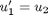
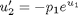
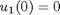
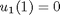
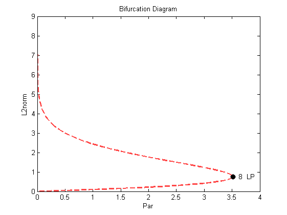

Bratu's Equation (Demo : exp)
This demo illustrates the computation of a solution family to the boundary value problem
: ,
: ,
with boundary conditions ,  This equation is also considered by Doedel, Keller, and Kernevez (1991).
Contents
Initialise workspace
Clear workspace
clear all % Create a continuation object. a{1}=auto;
Definition of function file
Display function file contents.
type(a{1}.s.FuncFileName);
function [f,o,dfdu,dfdp]= func(par,u,ijac) % % equations file for demo exp % f=[]; o=[]; dfdu=[]; dfdp=[]; f(1)= u(2); f(2)=-par(1) * exp(u(1));
Definition of boundary conditions file
Display boundary conditions file contents.
type(a{1}.s.BcndFileName);
function [fb,o,dbc]= bcnd(par,u0,u1,ijac) % % boundary conditions for demo exp % fb=[]; o=[]; dbc=[]; fb(1)=u0(1); fb(2)=u1(1);
Set intial conditions
We can either load data from the starting point file, or we can define the initial conditions directly into variable.
[a{1}.s.Par0,a{1}.s.U0,a{1}.s.Out0]=stpnt;
Load and display constants
Load the constants file.
a{1}.c=cexp1(a{1}.c);
% Display the constants.
a{1}.c
ans =
autoconstants handle
Properties:
Ndim: 2
Noutx: 0
Ips: 4
Irs: 0
Ilp: 1
Icp: 1
Ntst: 10
Ncol: 4
Iad: 3
Isp: 1
Isw: 1
Iplt: 3
Nbc: 2
Nint: 0
Nmx: 100
Rl0: 0
Rl1: 4
A0: 0
A1: 50
Npr: 100
Mxbf: 10
Iid: 2
Itmx: 8
Itnw: 5
Nwtn: 3
Jac: 0
Epsl: 1.0000e-007
Epsu: 1.0000e-007
Epss: 1.0000e-004
Ds: 0.0100
Dsmin: 1.0000e-003
Dsmax: 0.2000
Iads: 1
Thl: []
Thu: []
Uzr: [6x2 double]
Compute the solution family containing the fold
Run equilbrium solutions.
a{1}=runauto(a{1});
--------------- DYNAMICAL SYSTEMS TOOLBOX ---------------------
USER NAME : ECOETZEE
DATE : 26/10/2010 10:10:02
<
BR PT TY LAB PAR(01) INTEGRAL U(01) MAX U(01) MAX U(02)
1 1 EP 1 0.00000E+00 0.00000E+00 0.00000E+00 0.00000E+00
1 10 UZ 2 5.00071E-01 4.39344E-02 6.60050E-02 2.61316E-01
1 13 UZ 3 1.00000E+00 9.32569E-02 1.40484E-01 5.49353E-01
1 16 UZ 4 1.50000E+00 1.49861E-01 2.26457E-01 8.73235E-01
1 19 UZ 5 2.00000E+00 2.16936E-01 3.28922E-01 1.24822E+00
1 22 UZ 6 2.50000E+00 3.00803E-01 4.57926E-01 1.70436E+00
1 26 UZ 7 3.00001E+00 4.17958E-01 6.39959E-01 2.31962E+00
1 33 LP 8 3.51383E+00 7.61901E-01 1.18679E+00 4.00000E+00
1 43 UZ 9 3.00000E+00 1.23967E+00 1.97495E+00 6.10338E+00
1 49 UZ 10 2.49999E+00 1.50867E+00 2.43170E+00 7.20931E+00
1 55 UZ 11 2.00000E+00 1.77497E+00 2.89390E+00 8.26876E+00
1 62 UZ 12 1.50000E+00 2.07208E+00 3.41999E+00 9.42385E+00
1 70 UZ 13 1.00000E+00 2.44387E+00 4.09144E+00 1.08469E+01
1 82 UZ 14 5.00000E-01 3.01064E+00 5.13556E+00 1.29998E+01
1 100 EP 15 1.48905E-01 3.89420E+00 6.80010E+00 1.63687E+01
Total Time 0.286E+01
>
Restart at a labeled solution, using increased accuracy
a{2}=a{1};
a{2}.c=cexp2(a{2}.c);
a{2}=runauto(a{2});
--------------- DYNAMICAL SYSTEMS TOOLBOX ---------------------
USER NAME : ECOETZEE
DATE : 26/10/2010 10:10:06
<
BR PT TY LAB PAR(01) INTEGRAL U(01) MAX U(01) MAX U(02)
1 100 EP 16 9.52916E-05 8.40578E+00 1.56186E+01 3.40101E+01
Total Time 0.364E+01
>
Plot the solution
Create plaut object and plot solution.
p=plautobj; set(p,'xLab','Par','yLab','L2norm'); ploteq(p,a);